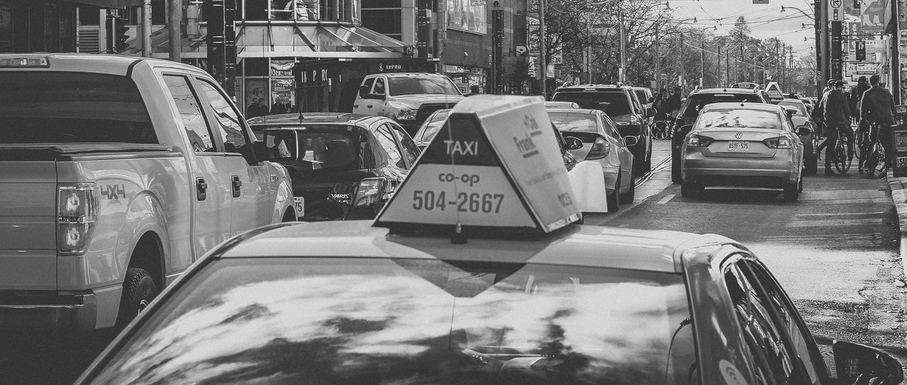
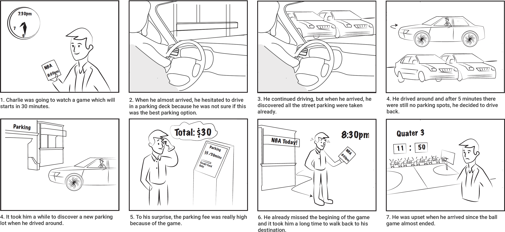
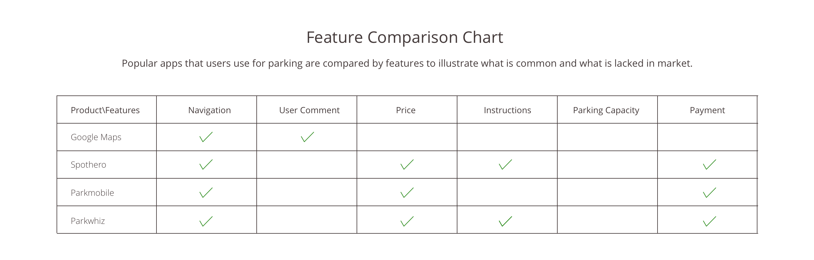
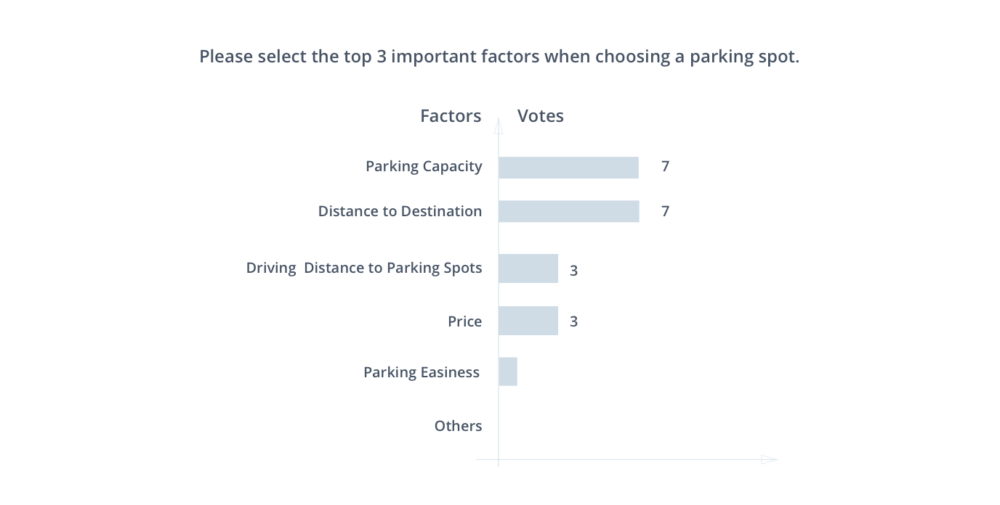
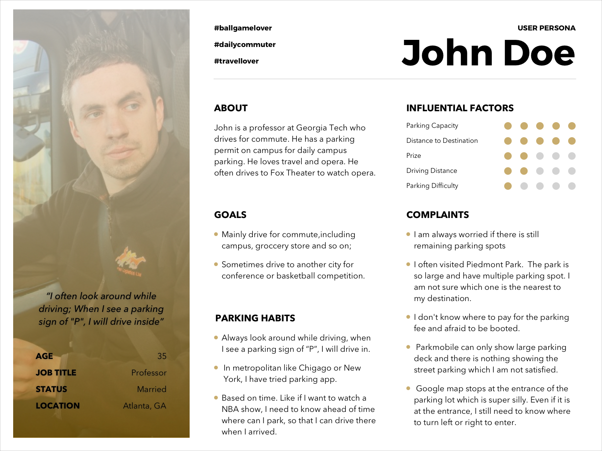

Park Alloter App
This projects aims at utilizing mobile app technology to help drivers make a wise and satisfying parking decision with the user updatable parking database. I worked as a UX Designer conducting 6 semi-structured interviews, generated the user interface and conducted user testing with four software engineers.

THE CHALLENGE
Find An Ideal Parking Efficiently
Our group aims at creating a mobile application to help drivers make a satisfying parking decision with the user updatable parking database. Through our user research, we identified that a delay of knowing information like parking fee and parking capacity is our main user pain point.

USER RESEARCH
Drivers Leverage on Episodic Memory to Park
I interviewed 6 drivers to understand what their current experience was. Based on their description, we discovered that drivers heavily rely on assumptions driven by their prior experience to judge where to park.

Drivers Find Parking Behind the Wheel
Based on interview results, I draw a userstory board to share with four software engineers to pitch the identified user behaviors. To our suprise, most of the users don't search for parking ahead of time. Rather, they find parking while they were behind the wheel.

Competitor Analysis
Based on interview results, I draw a user story board to share with four software engineers to pitch the identified user behaviors.

Light Survey Validation

User Pain Points
“Most of the time, I search for parking when I drive near to my destinations. I seldom search prior than that because I prefer street parking and search on google will give you a parking lot address.”
COMMUNICATION WITH TEAM
User Persona
I generated the following user persona to communicate with our team about who we are designing for.
